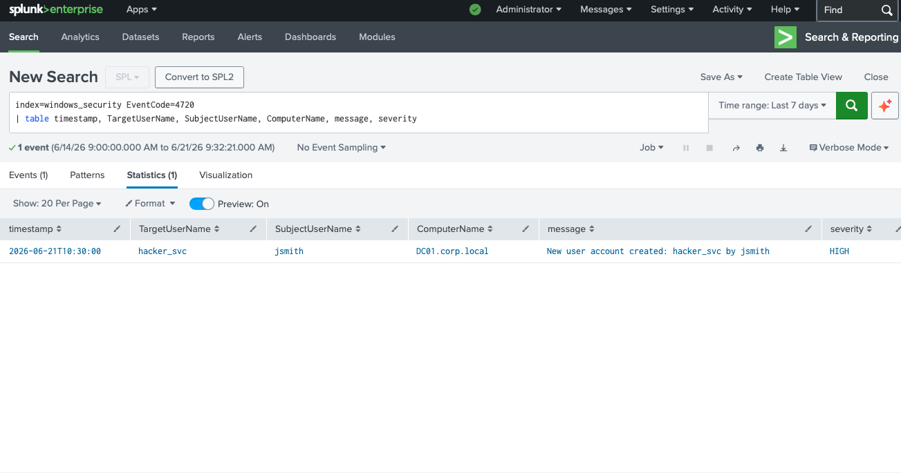
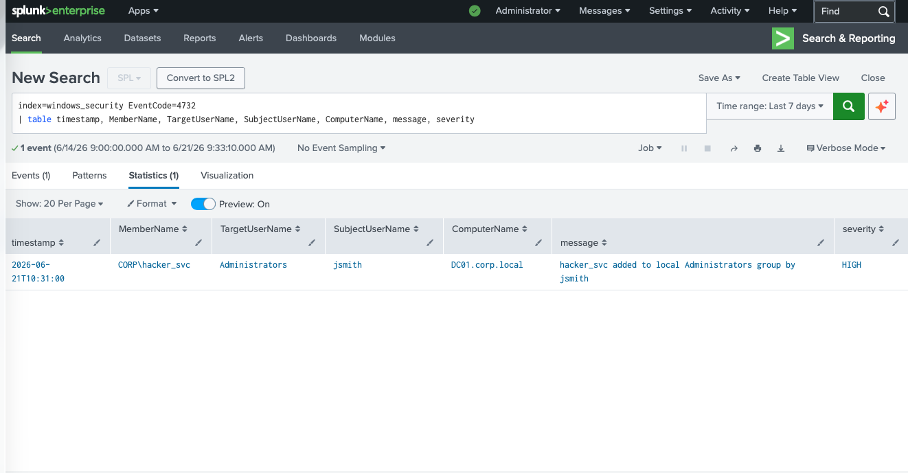
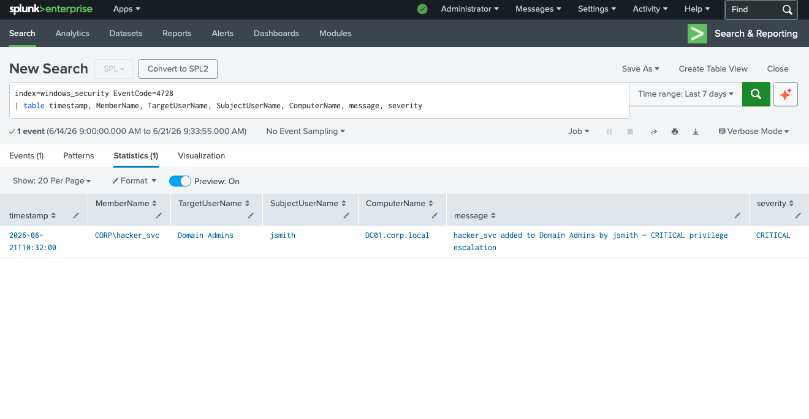
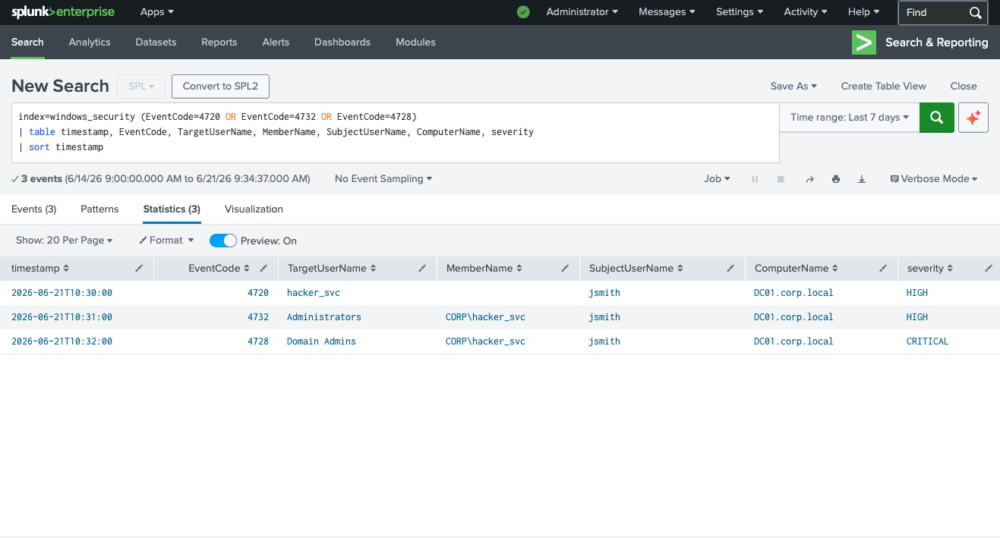

Was ist Privilege Escalation?
Bei einer Privilege Escalation verschafft sich ein Angreifer mit einem niedrigprivilegierten Konto höhere Rechte innerhalb des Systems oder der Domain. In Active Directory-Umgebungen ist das kritischste Ziel die Aufnahme in die Gruppe Domain Admins — damit hat der Angreifer vollständige Kontrolle über alle Systeme in der Domain.
In diesem Szenario nutzt der Angreifer das bereits kompromittierte Konto jsmith (aus Szenario 1 — Brute-Force), um ein neues, unauffälliges Service-Konto anzulegen und dieses schrittweise zu eskalieren.
Taktik: Angreifer legen oft neue Konten an (statt das kompromittierte
zu verwenden), um nach einem Passwortwechsel weiterhin Zugang zu behalten.
Ein unauffälliger Name wie hacker_svc (oder in der Realität z.B.
svc_backup, admin$) fällt im Alltag kaum auf.
Angriffsablauf
Erkannte Event IDs
Analyse — Schritt 1: Neues Konto angelegt (4720)
EventID 4720 wird ausgelöst, wenn ein neues Benutzerkonto erstellt wird. Entscheidend ist hier: Das Konto wird von jsmith auf dem Domain Controller DC01.corp.local angelegt — ein normaler Mitarbeiter hat keine Berechtigung, Konten auf dem DC zu erstellen.

// EventID 4720 — hacker_svc von jsmith auf DC01.corp.local angelegt — Severity: HIGH
Befund: jsmith (normaler Benutzer) legt ein neues Konto hacker_svc direkt auf dem Domain Controller an. In einer normalen Umgebung hat kein Standard-User diese Berechtigung — das setzt voraus, dass jsmith bereits erhöhte Rechte besitzt.
Analyse — Schritt 2: Lokale Administrators-Gruppe (4732)
Unmittelbar nach der Kontenerstellung folgt EventID 4732: CORP\hacker_svc wird zur lokalen Administrators-Gruppe auf DC01 hinzugefügt. Damit hat das neue Konto lokale Admin-Rechte auf dem Domain Controller — ein erster, aber kritischer Eskalationsschritt.

// EventID 4732 — CORP\hacker_svc in lokale Administrators-Gruppe aufgenommen — jsmith — Severity: HIGH
Kritischer Befund: Das frisch angelegte Konto hacker_svc wird sofort in die lokale Administrators-Gruppe des Domain Controllers aufgenommen. Lokale Admin-Rechte auf einem DC bedeuten de facto bereits vollständige Kontrolle über Active Directory.
Analyse — Schritt 3: Domain Admins — CRITICAL (4728)
Der finale und kritischste Schritt: EventID 4728 — Member Added to Global Group. CORP\hacker_svc wird in die Gruppe Domain Admins aufgenommen. Domain Admins haben uneingeschränkte Kontrolle über die gesamte Active Directory-Domain — alle Server, alle Workstations, alle Benutzerkonten.

// EventID 4728 — CORP\hacker_svc in Domain Admins aufgenommen — Severity: CRITICAL
Domain vollständig kompromittiert: Mit der Aufnahme in Domain Admins hat der Angreifer die höchste Berechtigungsstufe in Active Directory erreicht. Er kann nun Kennwörter aller Benutzer zurücksetzen, Gruppenrichtlinien ändern, Backdoors auf allen Systemen installieren und Persistence sicherstellen — selbst wenn jsmith gesperrt wird.
Analyse — Schritt 4: Vollständige Eskalationskette (kombiniert)
Die kombinierte Abfrage zeigt alle drei Events in chronologischer Reihenfolge. Das Zeitfenster von nur 2 Minuten (10:30 bis 10:32) ist ein klares Zeichen für ein automatisiertes oder vorbereitetes Angriffsskript.

// Eskalationskette: 4720 → 4732 → 4728 in 2 Minuten — jsmith / hacker_svc / DC01.corp.local
Pattern-Erkennung: Drei Group-Management-Events vom gleichen SubjectUserName (jsmith) in unter 2 Minuten auf dem Domain Controller — das ist eine klare Privilege Escalation Sequenz. In einem echten SIEM würde hier eine Correlation Rule sofort einen Alert auslösen.
Incident Response — Was als nächstes?
Prävention: Mit Microsoft Defender for Identity (früher ATA) oder ähnlichen Lösungen werden solche Konto-Eskalationen in Echtzeit erkannt. Im SIEM reicht eine Correlation Rule: EventCode=4720 UND EventCode=4728 vom gleichen SubjectUserName innerhalb von 5 Minuten = kritischer Alert.